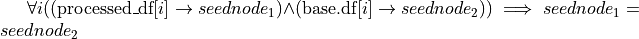

validating_models.dataset module#
- class validating_models.dataset.Dataset(df: pandas.core.frame.DataFrame, target_name: str, categorical_mapping: Mapping[str, Mapping[int, str]] = {})[source]#
Bases:
abc.ABCAbstract representation of a dataset, including the most important parameters about the dataset.
A dataset used for suppervised learning consists of samples (x,y), where x is a set of features (the problem instance) and y is a label (the target).
- Parameters
df (pandas.DataFrame) – The dataset having the features and the target as columns.
target_name (str) – The name of the target.
categorical_mapping (mapping of str to (mapping of int to str)) – Each feature/target can have an entry, which maps integer values of the feature/target to an meaningful description. (Especially useful for categorical features converted to numerical values.)
- x_data(df=False)[source]#
Returns the problem instances of the dataset (e.g. the dataset without the target)
- Parameters
df (bool) – Whethere to return a pandas.Dataframe.
- Return type
numpy.ndarray or pandas.Dataframe
- y_data(df=False)[source]#
Returns the target values of the dataset (e.g. the dataset without the features)
- Parameters
df (bool) – Whethere to return a pandas.Dataframe.
- Return type
numpy.ndarray or pandas.Dataframe
- property class_names#
The names of the classes of the target. In case of a regression task, this will return all unique values of the target.
- Returns
The names of the classes of the target.
- Return type
list of string
- feature_range(feature)[source]#
The numerical range of the given feature.
- Parameters
feature (str) – The feature
- Returns
The numerical range of the given feature.
- Return type
[numerical, numerical]
- categorical_split(feature, x)[source]#
Given the categorical mapping for the given feature two strings are returned. The first representing the categories assigned to values below x and the other categories above x.
- Parameters
feature (str) – The feature
x (float) – The split value
- Return type
str, str
- class validating_models.dataset.BaseDataset(df: pandas.core.frame.DataFrame, target_name: str, seed_query: str, seed_var: str, sample_to_node_mapping: pandas.core.frame.DataFrame, communicator: Optional[validating_models.shacl_validation_engine.Communicator] = None, random_schema_validation: bool = False, categorical_mapping: Mapping[str, dict] = {})[source]#
Bases:
validating_models.dataset.DatasetThe BaseDataset extends the Dataset by providing the capabilities to create the dataset based on a knowledge graph and by doing so extract a mapping from each sample to a seed node (IRI / URI) in the knowledge graph. As the SHACL validation should be performed over the minimal number of instances, it’s useful to have a query only returning the IRIs of the seed nodes in the dataset. That is the seed_query. The seed_query refers to the seed nodes with the variable called seed_var. The SHACL validation is performed via a communicator and can be turned to random by setting random_schema_validation to true.
- sample_to_node_mapping#
A DataFrame(idx, node_id) having the same index idx as the dataframe df storing the dataset and a column with the seed_var as name including all the seed node identifiers (IRI / URI). When SHACL validation is performed the joined SHACL valiation results, will be stored here.
- Type
pandas.DataFrame
- shacl_validation_results#
When validating a shacl schema the results are stored here. Entries are of the form f’{shacl_schema_directory}_{target_shape}’. The results are stored separate to avoid joining the different validation results for each seed node. Each entry is a DataFrame(node_id, validation_result)
- Type
dict of pandas.DataFrame
- seed_var#
The variable in seed_query and in the sample_to_node_mapping referring to the seed nodes
- Type
str
- random_schema_validation#
Whether random results are used instead of the SHACL valiation results.
- Type
bool
- communicator#
The communicator object used to communication with the SHACL validation engine.
- seed_query#
The SPARQL query returning the seed nodes used to create the dataset.
- Type
str
- Parameters
df (pandas.DataFrame) – The dataset having the features and the target as columns.
target_name (str) – The name of the target.
categorical_mapping (mapping of str to (mapping of int to str), optional) – Each feature/target can have an entry, which maps integer values of the feature/target to an meaningful description. (Especially useful for categorical features converted to numerical values.)
seed_query (str) – The SPARQL query returning the seed nodes used to create the dataset.
seed_var (str) – The variable in seed_query and in the sample_to_node_mapping referring to the seed nodes
sample_to_node_mapping (pandas.DataFrame) – A DataFrame(idx, node_id) having the same index idx as the dataframe df storing the dataset and a column with the seed_var as name including all the seed node identifiers (IRI / URI).
communicator (validating_models.shacl_validation_engine.Communicator) – The communicator object to use for the communication with an SHACL validation engine
random_schema_validation (bool) – Whether to use random results instead of the SHACL valiation results.
- static from_knowledge_graph(endpoint, validation_engine: validating_models.shacl_validation_engine.Communicator, data_query: str, target_name: str, seed_var: str = 'x', seed_query: Optional[str] = None, ground_truth: Optional[pandas.core.frame.DataFrame] = None, raw_data_query_results_to_df_hook=None, **args)[source]#
To create the dataset, while generating the task_example_to_node mapping, the dataset has to be retrieved from an endpoint by querying. This is the method, which has to be used if one doesn’t has the task_example_to_node mapping locally available.
- Parameters
endpoint (str) – The SPARQL endpoint
validation_engine (validating_models.shacl_validation_engine.Communicator) – The communicator object to use for the communication with an SHACL validation engine
data_query (str) – The used to extract the dataset, but at most the seed nodes (bound to ?x (!!))
seed_query (str, optional) – The query extracting all the seed nodes. Is inferred automatically from the data_query, but use incase of failure.
target_name – The name of the target.
ground_truth (pandas.DataFrame, optional) – If the ground_truth is not available in the knowledge graph a DataFrame(seed_var, target_name) can be provided, which will be joined with the dataset.
raw_data_query_results_to_df_hook (Functional) – The user may provide a custom methode to transform the raw sparql query results into the final dataframe. The seed nodes can be ignored here, but the order of the results need to be kept and all results have to be transformed into an sample.
args (Further Arguments) – Further Arguments to be passed to raw_data_query_results_to_df_hook.
- calculate_shacl_schema_valiation_results(constraints: List[validating_models.constraint.Constraint], checker=None)[source]#
- Calculate the shacl schema validation results, such that each shacl schema is reduced and each shacl schema is only validated once.
The join with the sample-to-node mapping is not performed.
- Parameters
constraints (list of Constraint) – The list of constraints referring to the shacl schemas and target schemas needed to be validated over the knowledge graph
checker (Checker) – If constraints include constraints of type PredictionConstraint the number of SHACL validation results needed can be further reduced by interleaving the constraint checking with the SHACL validation.
- get_shacl_schema_validation_results(constraints: List[validating_models.constraint.Constraint], indices=None, rename_columns=False, replace_non_applicable_nans=False, checker=None)[source]#
Gives the shacl schema validation results for the given constraints. Performs the needed index-join with the sample-to-node-mapping.
- Parameters
constraints (List[Constraint]) – The constraints, for which the shacl schema validation results are needed
indices (list of int, optional) – The indices for which the validation results are needed, by default all indices in the dataset
rename_columns (boolean, optional) – Renames the columns of shacl schema validation results to their constraint names, by default no renaming is done
replace_non_applicable_nans (boolean, optional) – Replaces nan values with true, by default nans are not replaced. Normally entities not included in the target defintion of the target shape are marked with nan.
checker (Checker) – If constraints include constraints of type PredictionConstraint the number of SHACL validation results needed can be further reduced by interleaving the constraint checking with the SHACL validation.
- Returns
The dataframe containing the shacl schema validation results.
- Return type
pandas.Dataframe
- class validating_models.dataset.ProcessedDataset(processed_df: pandas.core.frame.DataFrame, base: validating_models.dataset.BaseDataset, base_indices: List[int], target_name: Optional[str] = None, categorical_mapping=None)[source]#
Bases:
validating_models.dataset.DatasetThe user of a BaseDataset ‘’base’’ may choose to extract the dataframe by calling base.df and choose to modify the features and targets (feature engineering). Also samples may be merged, dropped or duplicated. In that case the sample-to-node-mapping will be corrupted and need to be repaired. Keeping the mapping intact after performing operations like the one above is the task of this class.
- Parameters
processed_df (pandas.DataFrame) – The processed dataset having the features and the target as columns.
base (validating_models.dataset.BaseDataset) – The BaseDataset originally used to create the Dataset, and includes the original sample-to-node mapping.
base_indices (list of int) – The indices of the BaseDataset, which belong to the new processed dataset. (If the index structure is kept intakt it’s simply list(processed_df.index))
target_name (str) – The name of the target.
categorical_mapping (mapping of str to (mapping of int to str)) – Each feature/target can have an entry, which maps integer values of the feature/target to an meaningful description. (Especially useful for categorical features converted to numerical values.)
- static from_unchanged_index(processed_df: pandas.core.frame.DataFrame, base: validating_models.dataset.BaseDataset, target_name: Optional[str] = None, categorical_mapping=None)[source]#
Creates the ProcessedDataset from a Dataframe with the index structure kept intact. For the datasets, this means that a given index refers to the semantically indentical samples (which therefor refer to the same seed node in the knowledge graph). E.g. 
- Parameters
processed_df (pd.DataFrame) – The modified dataframe representing the dataset.
base (BaseDataset) – The origin of processed_df is base.df. Therefor base is the dataset directly created from the knowledge graph and contains the sample-to-node mapping.
target_name (str, optional) – The name of the column in processed_df refering to the target, optional
categorical_mapping (mapping of str to (mapping of int to str), optional) – Each feature/target can have an entry, which maps integer values of the feature/target to an meaningful description. (Especially useful for categorical features converted to numerical values.)
- Returns
The ProcessedDataset object with the correctly set base_indices.
- Return type
- static from_index_column(processed_df: pandas.core.frame.DataFrame, base: validating_models.dataset.BaseDataset, column: str, target_name: Optional[str] = None, categorical_mapping=None, drop_column_afterwards=True)[source]#
Works as from_unchanged_index but assumes the index copied to column before processing the dataframe. For example by using reset_index(drop=False) on base.df.
- Parameters
processed_df (pd.DataFrame) – The modified dataframe representing the dataset.
base (BaseDataset) – The origin of processed_df is base.df. Therefore base is the dataset directly created from the knowledge graph and contains the sample-to-node mapping.
column (str) – The index column.
target_name (str, optional) – The name of the column in processed_df refering to the target, optional
categorical_mapping (mapping of str to (mapping of int to str), optional) – Each feature/target can have an entry, which maps integer values of the feature/target to an meaningful description. (Especially useful for categorical features converted to numerical values.)
drop_column_afterwards – Whether to drop the specified column afterwards as the column is usually not needed afterwards. Defaults to True.
optional – Whether to drop the specified column afterwards as the column is usually not needed afterwards. Defaults to True.
- Returns
The ProcessedDataset object with the correctly set base_indices.
- Return type
- static from_node_unique_columns(processed_df: pandas.core.frame.DataFrame, base: validating_models.dataset.BaseDataset, base_columns: List[str], matching_new_columns: Optional[List[str]] = None, target_name: Optional[str] = None, categorical_mapping={}, drop_join_columns_afterwads=True)[source]#
Creates the ProcessedDataset from a Dataframe by joining with the BaseDataset via base_columns = matching_new_columns and therefore reconstructing the sample-to-node mapping.
- Parameters
processed_df (pd.DataFrame) – The modified dataframe representing the dataset.
base (BaseDataset) – The origin of processed_df is base.df. Therefore base is the dataset directly created from the knowledge graph and contains the sample-to-node mapping.
base_columns (List[str]) – The columns to be used for joining in base.df.
matching_new_columns (List[str], optional) – The columns to be used for joining in processed_df, by default base_columns
target_name (str, optional) – The name of the column in processed_df refering to the target, optional
categorical_mapping (mapping of str to (mapping of int to str), optional) – Each feature/target can have an entry, which maps integer values of the feature/target to an meaningful description. (Especially useful for categorical features converted to numerical values.)
drop_join_columns_afterwads (bool, optional) – Whether to drop the matching_new_columns in processed_df. Defaults to True.
- Returns
The ProcessedDataset object with the correctly set base_indices.
- Return type
- get_shacl_schema_validation_results(constraints: List[validating_models.constraint.Constraint], rename_columns=False, replace_non_applicable_nans=False, checker=None)[source]#
Gives the shacl schema validation results for the given constraints. Performs the needed index-join with the sample-to-node-mapping.
- Parameters
constraints (List[Constraint]) – The constraints, for which the shacl schema validation results are needed
rename_columns (boolean, optional) – Renames the columns of shacl schema validation results to their constraint names, by default no renaming is done
replace_non_applicable_nans (boolean, optional) – Replaces nan values with true, by default nans are not replaced. Normally entities not included in the target defintion of the target shape are marked with nan.
- Returns
The dataframe containing the shacl schema validation results.
- Return type
pandas.Dataframe
- get_sample_to_node_mapping()[source]#
Returns the sample-to-node mapping.
- Returns
The DataFrame(idx, node_id) containg the sample-to-node mapping.
- Return type
pandas.Dataframe
- calculate_shacl_schema_valiation_results(constraints: List[validating_models.constraint.Constraint], checker=None)[source]#
- Calculate the shacl schema validation results, such that each shacl schema is reduced and each shacl schema is only validated once.
The join with the sample-to-node mapping is not performed.
- Parameters
constraints (list of Constraint) – The list of constraints referring to the shacl schemas and target schemas needed to be validated over the knowledge graph
checker (Checker) – If constraints include constraints of type PredictionConstraint the number of SHACL validation results needed can be further reduced by interleaving the constraint checking with the SHACL validation.
- validating_models.dataset.categories_to_numericals(df)[source]#
Identifies categorical columns and converts all of them to numerical columns.
- Parameters
df (_type_) – _description_
- Returns
The processed dataset and a categorical mapping documenting the replacements done, to convert categorical colums to numerical ones.
- Return type
tuple of pandas.Dataframe, dict
- validating_models.dataset.get_valid_indices(dataset, constraints)[source]#
Given the dataset and a list of contraints this method will compute the indices of the dataset, belonging to entries, which are valid w.r.t. all given constraints. If a constraint involves the target the ground truth value in the dataset is used.
- Parameters
dataset (BaseDataset or ProcessedDataset) – The dataset
constraints (list of constraints) – The list of constraints
- Returns
the indices of the entries valid w.r.t. the constraints
- Return type
list of int